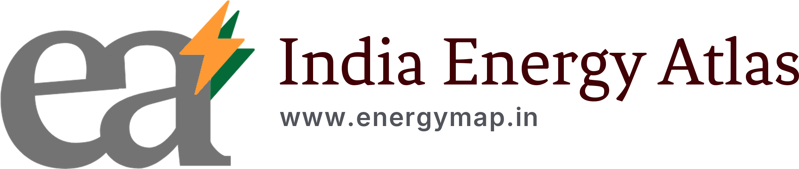
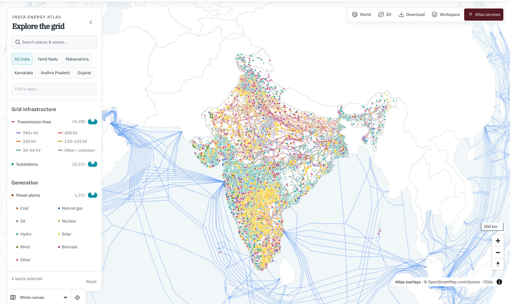
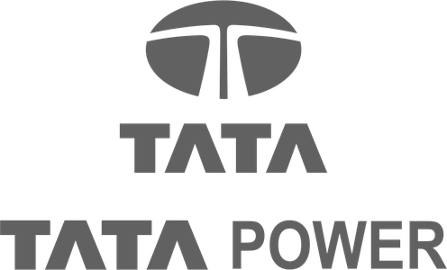
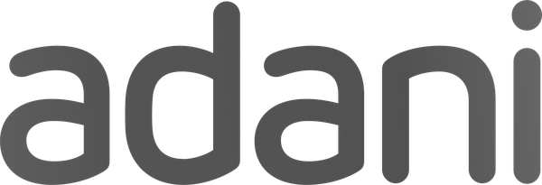
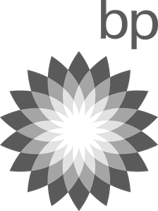
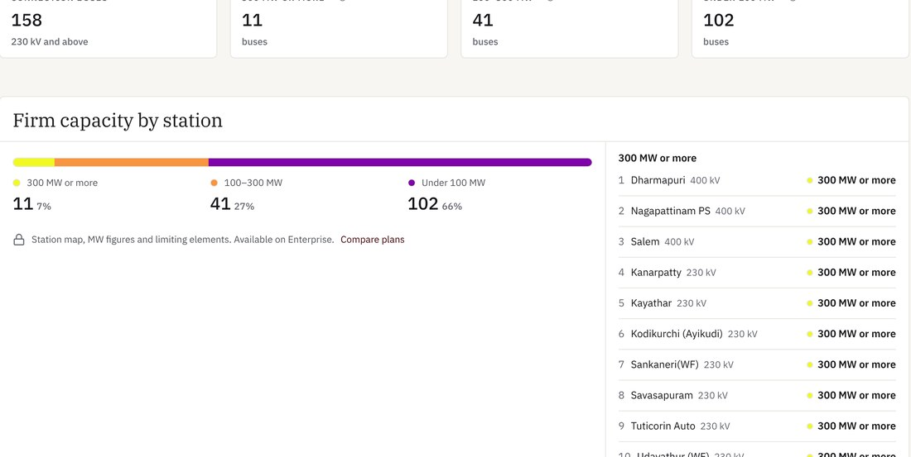
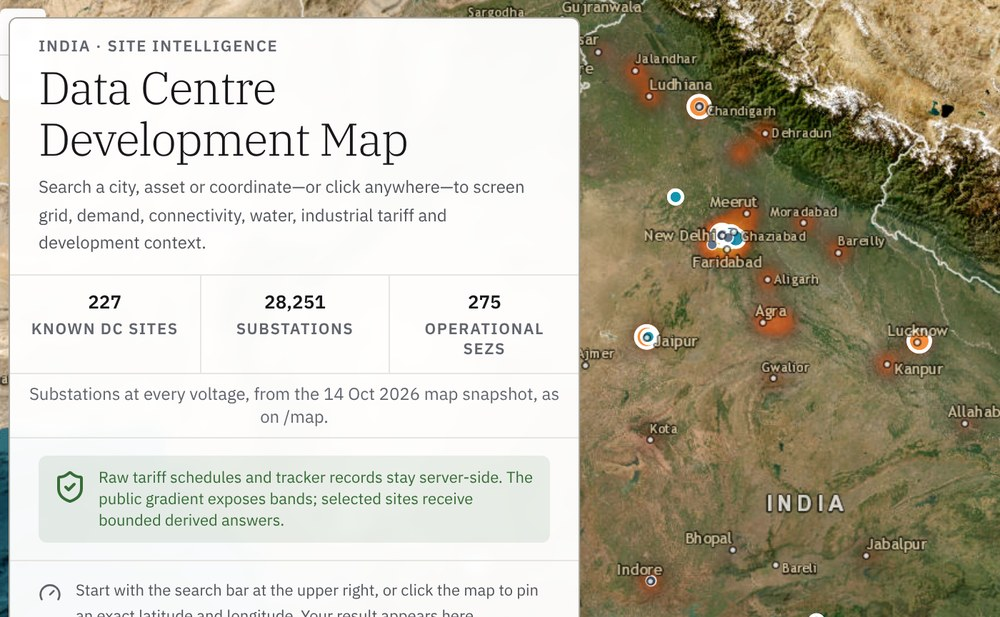
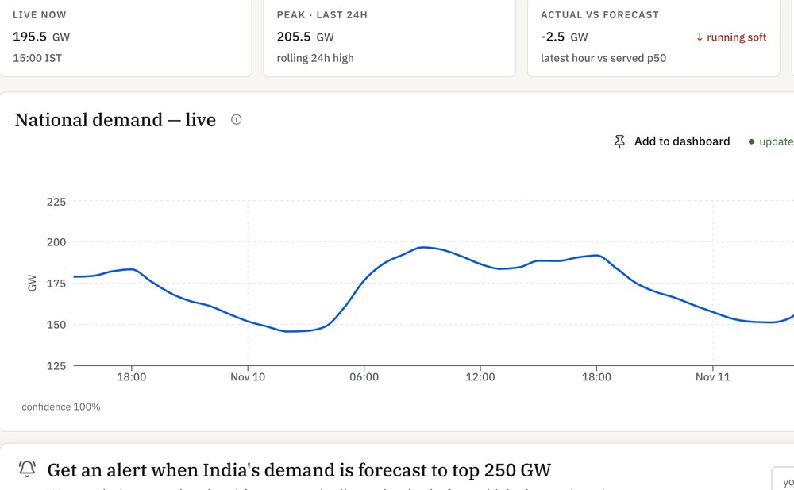

Hundreds of scattered public data sources, fused into a single model of the Indian grid that updates continuously. Use it online through Claude and ChatGPT, or run a private copy behind your own firewall.

Grid operators, regulators, exchanges, utilities, weather and maps. Gathered, cleaned and reconciled for you.
Where everything is and how it behaves over time. Always refreshing.
Ask in plain English inside Claude, ChatGPT and other AI tools, or call the API. Free to start.
Host a full copy on your own servers. No internet needed. Your data never leaves the building.



Most of the cost of an energy study is the hundreds of hours spent finding, cleaning and stitching data together before the first simulation runs. The Atlas model has already done that work, for the whole country.

Where can a new plant or large load connect? See firm capacity by station before you commit to land.

Screen sites on grid, fibre, water and tariff, and test what a new campus does to the local network.

Simulate how the system dispatches hour by hour, and what it means for costs, prices and emissions.
Check line loadings and voltages on the real network, including when a line or transformer is out.
| Best for | Analysts, researchers and teams getting started |
| Access | Claude, ChatGPT, web app and API |
| Updates | Continuous. Always the latest model |
| Setup | None. Sign up free at energymap.in |
| Best for | Utilities, developers, data centre operators |
| Access | Runs on your servers, with your internal AI tools |
| Internet | Not required. Works fully isolated |
| Your data | Stays inside, alongside your confidential data |
Your team asks real questions on the public model. No cost, no commitment.
We agree on the studies, regions and internal systems that matter to you.
A copy of the model is installed inside your network, isolated from the internet.
Your engineers run siting, cost and power flow work in-house, on demand.
Scan to explore the map and ask your first question.
For a private deployment, talk to the India Energy Atlas team.